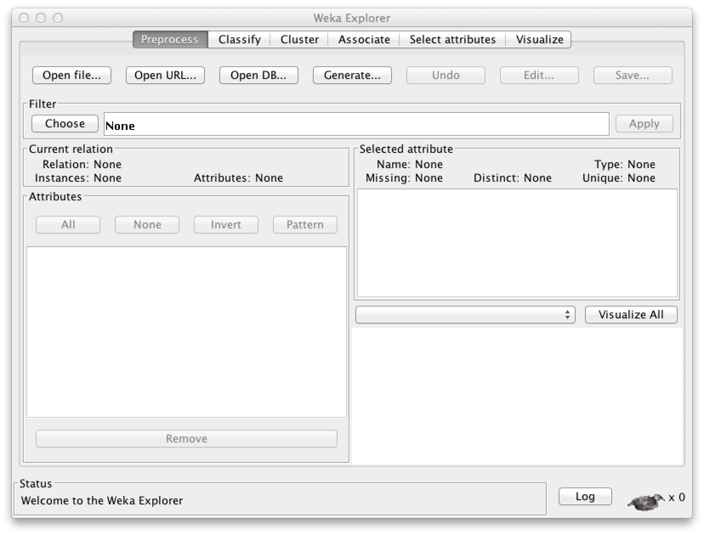
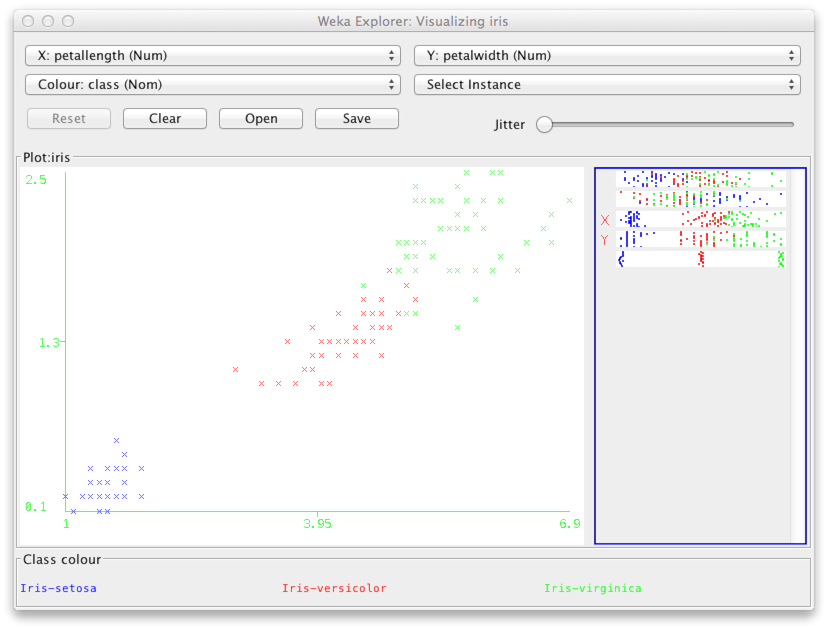
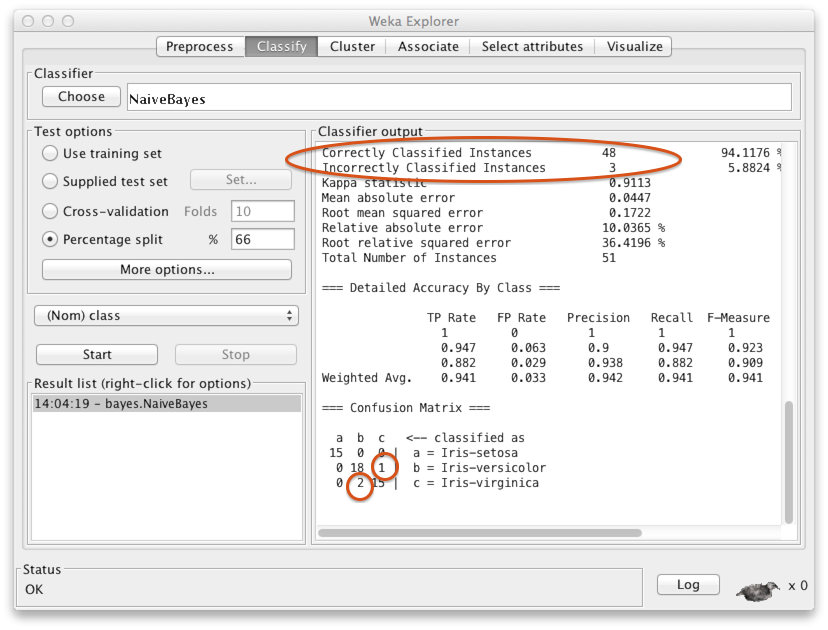
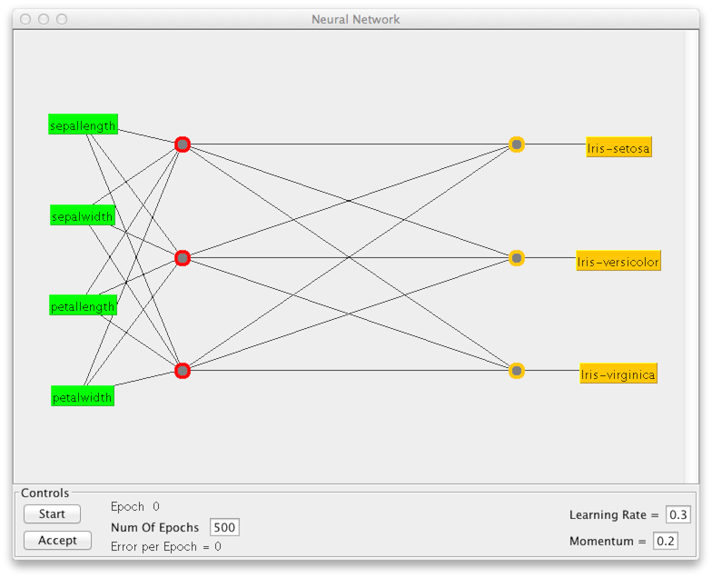
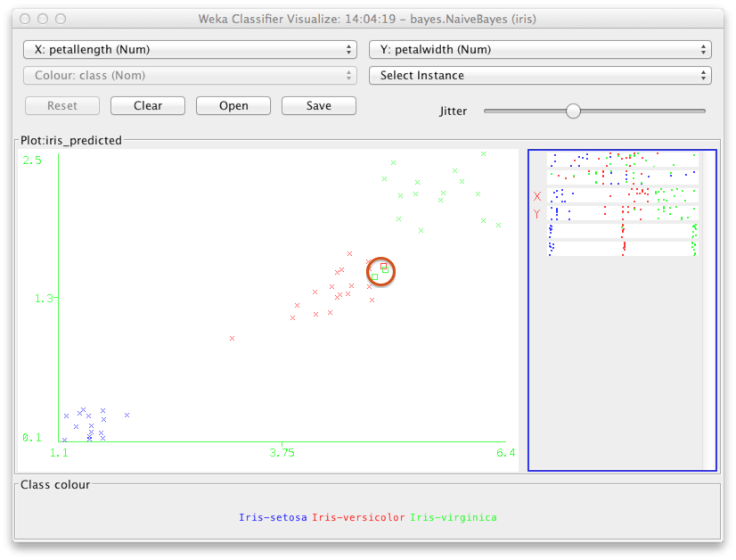
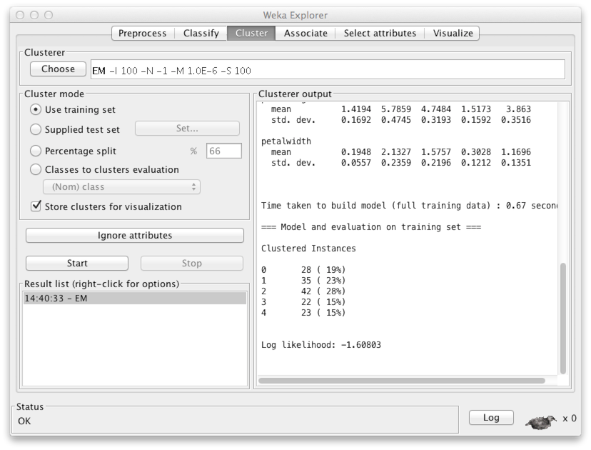

Here you'll find instructions for installing and getting started with the Weka software. After going through this minitutorial, you'll be able to complete Exercises 5.1 and 5.2.
Installation
Download the Weka installation package from here, and run it to install Weka on your computer.
Start Weka to get the following dialogue:

Downloading and opening data
Download the Iris dataset here. The file contains data about the iris flowers. The actual data comes after the metadata in the lines starting with %.
@DATA 5.1,3.5,1.4,0.2,Iris-setosa 4.9,3.0,1.4,0.2,Iris-setosa 4.7,3.2,1.3,0.2,Iris-setosa 4.6,3.1,1.5,0.2,Iris-setosa 5.0,3.6,1.4,0.2,Iris-setosa ...
You can also download other arff files, which you can find
by googling.
Now choose the Explorer application in Weka. You should get the following screen:

Now click Open file... and choose the iris.arff
file that you just downloaded. You'll get the following screen:
The Current relation panel says that there are 150 data points, each of which has five attibutes (feature variables). A list of the variables is found in panel Attributes. Variables 1–4 contain the width and length of the sepals and petals of the flowers. The fifth variable, Class, indicates the species of the flower: iris setosa, iris versicolor, or iris virginica.
Visualizing the data
You may have heard about the importance of looking at the data before rushing into any data analysis. Choose Visualize to get a scatter plot display showing all pairs of variables.

Double click for example the middle figure on the second row from the top. This gives you a larger view of the plot showing variables petal length and petal width. In the plot, each point corresponds to one of the 150 data points in the data. The (x,y) coordinates are determined by the petal length and the petal width respectively. The color is determined by the species, i.e., variable Class.
It is useful to add some noise into the (x,y) coordinates so that points that may otherwise be hidden beneath other points located at the exact same coordintes become visible. This is done by using the Jitter slides.
As you can see above, the class iris setosa (blue) is clearly separated from the others. This is a good sign for classification purposes.
Supervised learning: Classification
You can now close the scatter plot window and choose the Classify tab in the top bar.

In the panel Classifier, click Choose. You can now choose a classifier of your liking. Since we know the naive Bayes classifier already so well, let's use it. You'll find it under Bayes with the name NaiveBayes.

Some classifiers have a number of parameters that you can adjust by clicking the name of the classifier in the panel Classifier. However, the naive Bayes classifier doesn't require any specific finetuning.
In Weka the default is that the class variable, i.e., the variable that we will try to predict based on the other variables, is the last variable in the data. In other words, the variable Class will be the Y variable in our notation, while the others would be jointly denoted by X. In panel Test options, choose Percentage split. This means that the classifier will be trained on a randomly selected subset of 66 % of the whole data, while the remaining 34 % are used for testing.
Click Start to start the training and testing of the classifier. Since the data set is so small, and the naive Bayes classifier is very efficient, it only takes a short while to complete the process.
The output tell us that in the test set (n=51), 48 instances were correctly classified and three were misclassified. The confusion matrix at the bottom shows more specifically that two items in the class iris virginica were incorrectly classified as iris versicolor, and one item in iris versicolor was misclassified as iris virginica. All the 15 iris setosa instances were correctly classified. Can you think why that might be the case? Hint: Recall the scatter plot above.
Next you should try out other classifiers such as the nearest
neighbor classifier (lazy/IB1), decision tree
(trees/J48), and multilayer perceptron (MLP)
(functions/MultiLayerPerceptron). The advantage of the
decision tree classifier is its easy interpretation. You can access
the classifier after training in the report under the heading J48
pruned tree. You can read it directly as
an if-then-else statement, where the classification
decision is given after a colon :. For example, the
following classifier says that if the petal width value is
less than 0.6, the classification decision is iris setosa,
and so forth.
petalwidth <= 0.6: Iris-setosa (50.0) petalwidth > 0.6 | petalwidth <= 1.7 | | petallength <= 4.9: Iris-versicolor (48.0/1.0) | | petallength > 4.9 | | | petalwidth <= 1.5: Iris-virginica (3.0) | | | petalwidth > 1.5: Iris-versicolor (3.0/1.0) | petalwidth > 1.7: Iris-virginica (46.0/1.0)
In the case of the MLP, it is perhaps most interesting to examine
the network architecture (structure). Click on the name of the
classifier to view the settings. Set GUI = True. When
you click Start after this, you will get a window that
represents the network structure (see below). Here you must click
Start in panel Controls, to train the classifier.
(Unless you do so, and click Accept, the classifier will
simply classify all items in class iris virginica.) After
training, you can accept the classifier and study the results.
Note that especially if you build a complex network with many neurons or nodes, the training can take a while.
Visualization of classification results
The next step is to take a closer look at the classification results. This way we can focus on the errors, and perhaps get some ideas about how to achieve even better results. Right click Results list for the classifier of your choice (where it says right-click for options), and choose Visualize classifier errors. Add jitter to the scatter plot to distinguish individual data points.
The y-axis shows the classification decision by the classifier (in the above case, the naive Bayes classifier), while the x-axis shows the actual class. You can see the same misclassified points as shown in the confusion matrix (above).
To see what kind of instances were misclassified, we can change the variables on the x- and y-axes to be, e.g., petal length and petal width respectively. You can use the selectors at the top of the window to do this.

The misclassified instances show up as rectangles (highlighted above by a red circle). As you may have guessed, the misclassified instances are near the edges of the classes, and hence easy to mix up with the wrong class.
Unsupervised learning: Clustering
You should now close the window displaying the classification results, and choose Cluster in the Weka Explorer dialogue. Since this is unsupervised learning, you should remove the class variable (the species of the flower). This is done by clicking Ignore attributes and choosing class in the resulting dialogue. Click Select to confirm your choice.
Use the default clustering method, "EM", or choose another one from the menu -- for example, SimpleKMeans is a good, commonly used technique. Finally, click Start to get a report of the clustering results.
At the end of the report, you'll see among other things, how many clusters the method chose to cluster your data. In this case, the number is five. The first group ('0') contains 28 instances, the second ('1') contains 35, etc.
To visualize the clustering results, right click the name of the method in Result list. A window will appear. Again, choose the variables to show on the x- and y-axes to be, e.g., petal length and petal width. A bit of jitter won't hurt.
Groups 0 ja 3 (blue and cyan) cover the clearly separated iris setosa class. The other clusters split the remaining data into three parts. Since this is unsupervised learning, there is no guarantee, however, that the clusters would correspond to the class labels at all.
Go ahead and try different classification and clustering methods. The exercise can be found in the beginning of Part 5.